LL Buchanan Lake
Floating islands
Betty's Island - 3, a floating island....
The ongoing story of a floating island.
Continued from Betty's Island -2 page. This whole page is the launching of the island on 6 June 2007, before the next Betty's Island page.
6 June 2007: The completed floating island was towed to its anchor in the lake, with bagpipe and trumpet music, and wine of course. A bit of a party, with the news media there, for the wine, of course.
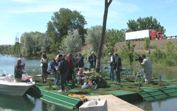
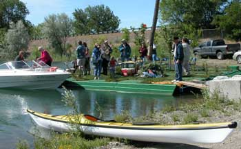
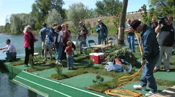
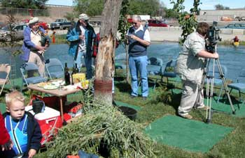
Everybody rode the island out to the anchor.
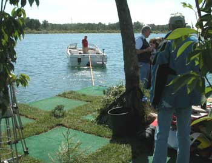
The island towing crew.
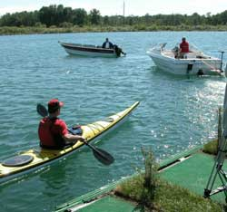
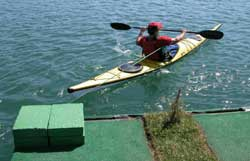
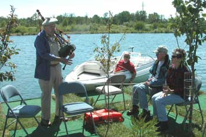
The music. Rod MackIntosh with his bag pipes, playing traditional old Scottish Floating Island Anchoring tunes. That was in between several Scots on board telling old Scottish stories and such things.
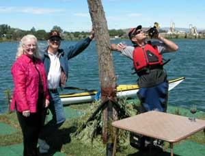
Bob Allgaier the kayaker, with his pocket trumpet, heralding all that needed to be heralded.
And that is Betty, of Betty's Island. She may have seen all the island building tools, materials and other stuff in the back of her previously clean station wagon she has been loaning to the island slave. Her sense of humor has served the island well.
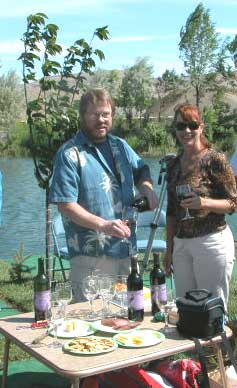
The wine. Joel Tefft the wine maker at Tefft Cellars, with Laurel, and fine wine.
The Tefft Cellars great blue heron on the label, residing at the Tefft winery flower and frog pond, well known among the local herons, is rumored to occasionally visit the resident great blue heron at LL Buchanan Lake, or at least a heron who looks just like him, or her.
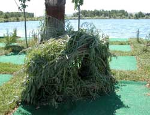
Betty's Island upscale goose nest.
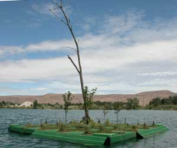
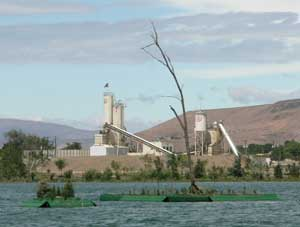
Betty's Island is close to Pebbles Island when the breeze is from the northwest. Floating islands congregate.
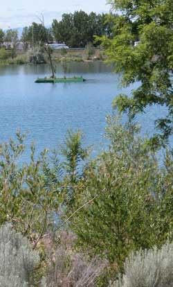
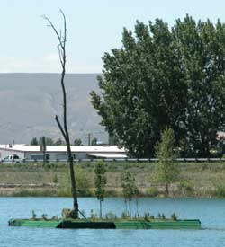
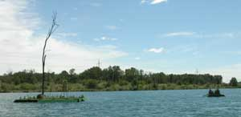
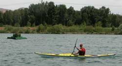
The story continues on Betty's Island -4 page.
Betty's Island-1
Betty's Island-2
Betty's Island-4
Betty's Island-5
Betty's Island-6
Barney's Island
Pebbles Island
Aerial Photos
Neighbors
History
Swans
Birds
Trees
Trees-2
Trees-3
Lake
Links